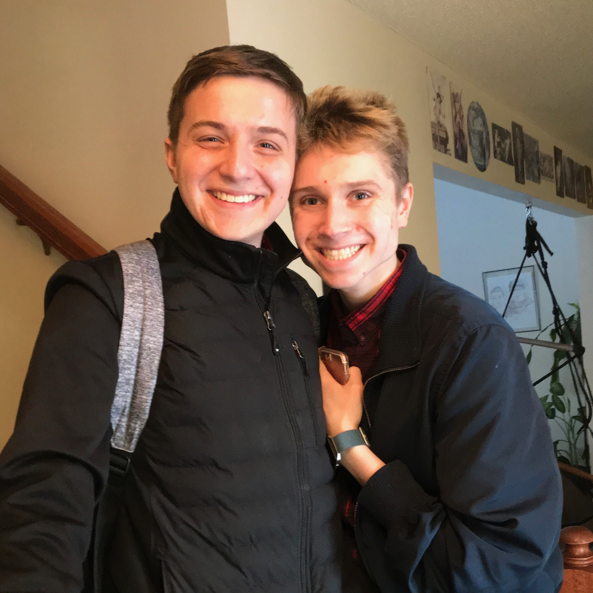
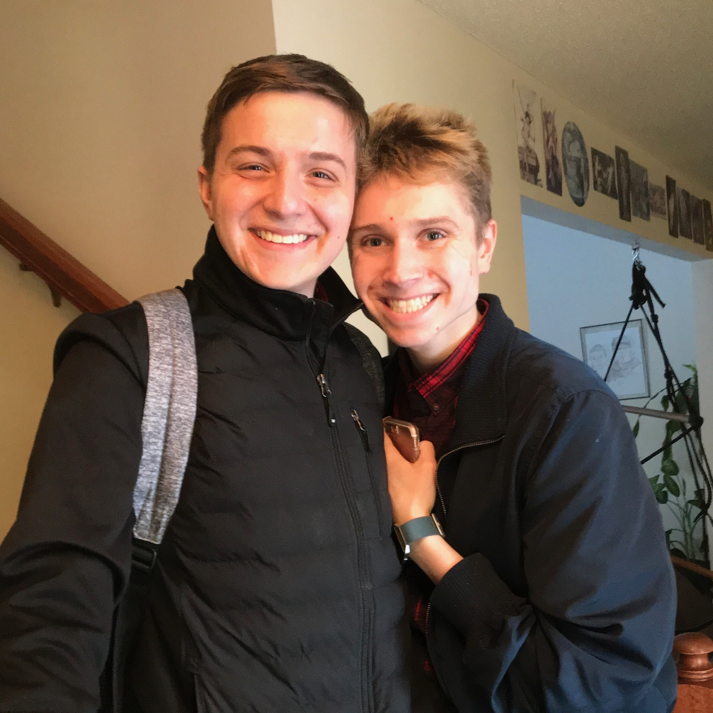

My name is Oliver Sigwarth and I was born in River Falls, Wisconsin on August 16th, 2000. My parents are glassblowing artists. Their business is Sigwarth Glass. They are extremely accomplished in their field. They have installations in various museums, hospitals, and elsewhere. They have received numerous awards for their work. I have a sister Eva, who has a master’s degree in psychology. She is currently working as a case manager for Peirce County and she is on track to become a full-time therapist. My partner David has a degree in psychology from the University of Wisconsin – River Falls, which is the place we met. He works at Roger’s Behavioral Health in Woodbury, Minnesota. He works in depression recovery where he assists children ages eleven to eighteen in repairing their mental health. I have a very successful family and I find myself in very lucky and loving company. I originally went to the University of Wisconsin – River Falls for music. I went to school for many years pursuing music and during that time put out three albums of music. One of my songs “Walking” is the theme to the Independent Artists’ Podcast. After experiencing major life events like being hacked and having my information exposed, I found myself oriented to a new field of inquiry. Learning about the tech world made me change my focus from music to computer science. I am now pursuing a degree in computer science. I work very hard with my various hobbies to pursue a successful life and career by building skills and learning.
About Me
 
